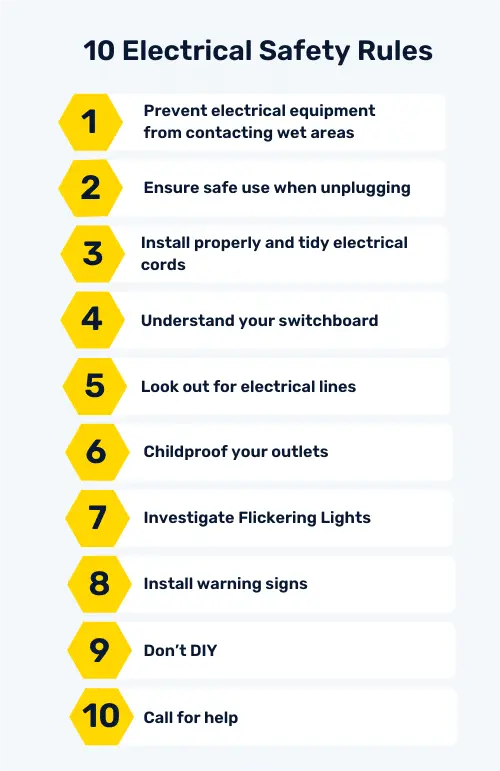

10 Electrical Safety Tips and Rules
Learn about these electrical safety tips and how they can be used to avoid electrical hazards in the workplace and at home.
What is Electrical Safety?
Electrical safety is a general practice of handling and maintaining electrically powered equipment to prevent incidents. Adequate training is required to properly identify and control hazards to keep the environment safe for those around.
10 Electrical Safety Rules
Whether you’re at work or home, both settings operate on electricity. Here are 10 electrical safety tips to help you avoid electrical hazards:
1. Keep electrical equipment away from water
Keep water and other liquids at least 5 feet away from electrical equipment and sources of electricity. It is recommended to install Ground Fault Circuit Interrupters (GFCIs) which help prevent electrical incidents like electrical shock, ground faults, fires, overheating, and the destruction of wire insulation.
2. Unplug equipment safely
When disconnecting electrical equipment, gently pull it by the plug instead of jerking the electrical cord. Pulling by the cord can damage the electrical cable and cause a shock.
3. Install properly and tidy electrical cords
Good electrical installation consists of fixed electrical equipment and electrical cords out of the way (and out of reach of pets that can chew on them).
4. Familiarize yourself with your switchboard
A switchboard is an electrical safety device that protects and isolates the operator from electrical current. It controls the flow of electricity by dividing, distributing, and metering electrical power to different parts and devices. To ensure best performance and safety, electrical power entering the switchboard must resemble the amount of power it distributes. Otherwise, it can cause overheating and lead to electrical fire.
Choose from our collection of free, ready-to-download, and customizable templates that comply with government standards
Download Government Electrical Safety Standards PDF
Explore extensive collection of Electrical Inspection checklists by clicking here to browse and download the templates that best suit your needs.
5. Look out for electrical lines
Be aware of power lines before climbing a tree or a ladder, and especially when working at height.
6. Childproof your outlets
Use outlet covers when there are children around to avoid electrocution.
7. Investigate flickering lights
Have flickering lights checked and fixed, as it can be caused by loose connections somewhere or the bulb itself needs to be secured or replaced.
8. Install warning signs
Use clear visible signs when there’s high voltage in the vicinity that people need to be warned about.
9. Don’t DIY
Instead of fixing issues, most DIYs can cause further damage. Should any electrical issues arise, it is always best to have an expert handle it.
10. Call for help
In case of an emergency, don’t hesitate to call the emergency services who will talk you through how to safely assist in the situation until help arrives.